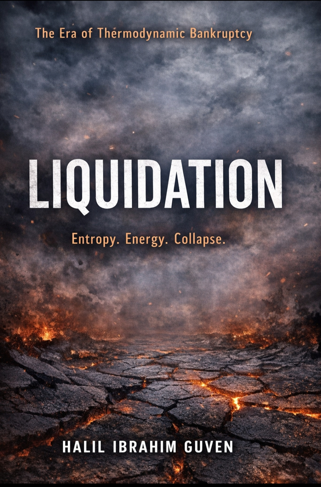

Market Alchemy Library
Market Alchemy Kütüphanesi
Books and research texts on structural systems, economic phase transitions and systemic collapse dynamics.
Applied Research
Bundle — Structural Market Dynamics ($19) → Get Bundle
Liquidation Cascades ($9) → Access
Liquidity Voids ($9) → Access
Volatility Compression ($9) → Access
Framework Texts
Core doctrinal texts defining the Market Alchemy framework.

MARKET ALCHEMY FRAMEWORK
Liquidation — The Market Alchemy Framework
Energy, liquidity and the mechanics of systemic liquidation.

DOCTRINAL INTRODUCTION
Market Alchemy
Short doctrinal introduction to the Market Alchemy framework.
Structural Systems Series
Studies exploring time, coordination, energy and systemic constraints.

STRUCTURAL SYSTEMS SERIES — I
The Place of Time
Time interpreted as structural hierarchy and depth.

STRUCTURAL SYSTEMS SERIES — II
The Condensation Point
Debt, energy and the narrowing of global coordination.
Turkish Editions

Tasfiye: Faz Geçişi ve Sistem Entropisi
Termodinamik iflas çağı. Entropi, enerji ve faz geçişi.
Citation
Guven, Halil Ibrahim.
Liquidation: The Market Alchemy Framework.
Market Alchemy Library.
Guven, Halil Ibrahim.
The Place of Time.
Structural Systems Series.
Guven, Halil Ibrahim.
The Condensation Point.
Structural Systems Series.
Guven, Halil Ibrahim.
Liquidation: The Market Alchemy Framework.
Market Alchemy Library.
Guven, Halil Ibrahim.
The Place of Time.
Structural Systems Series.
Guven, Halil Ibrahim.
The Condensation Point.
Structural Systems Series.